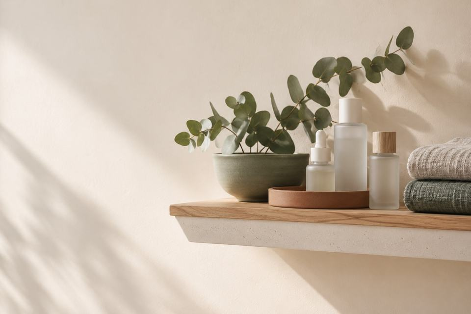
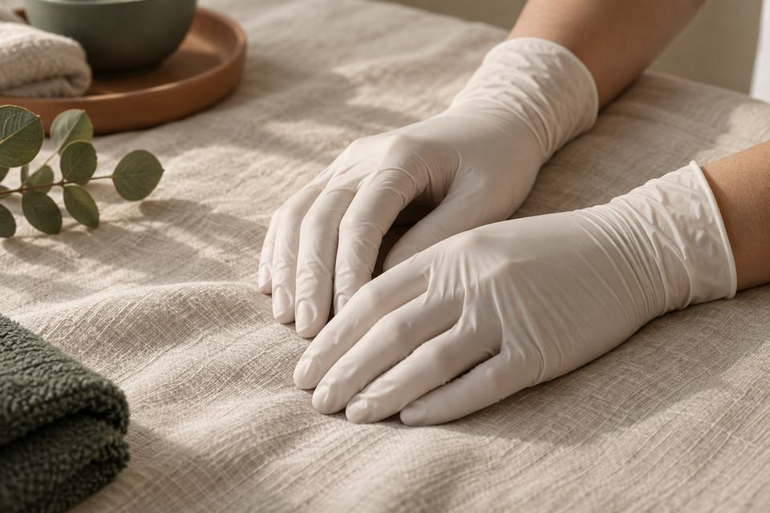
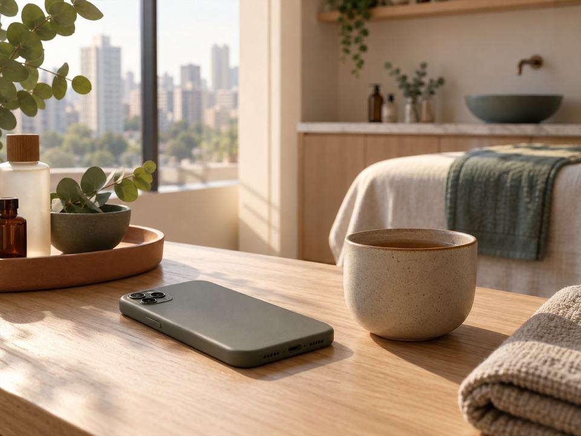
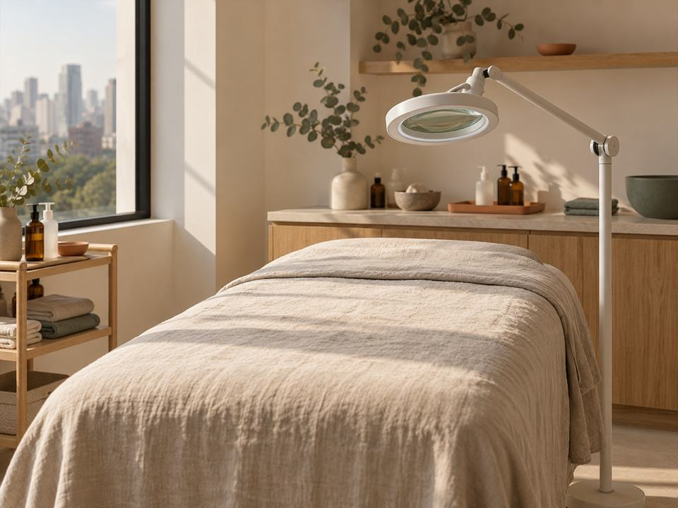
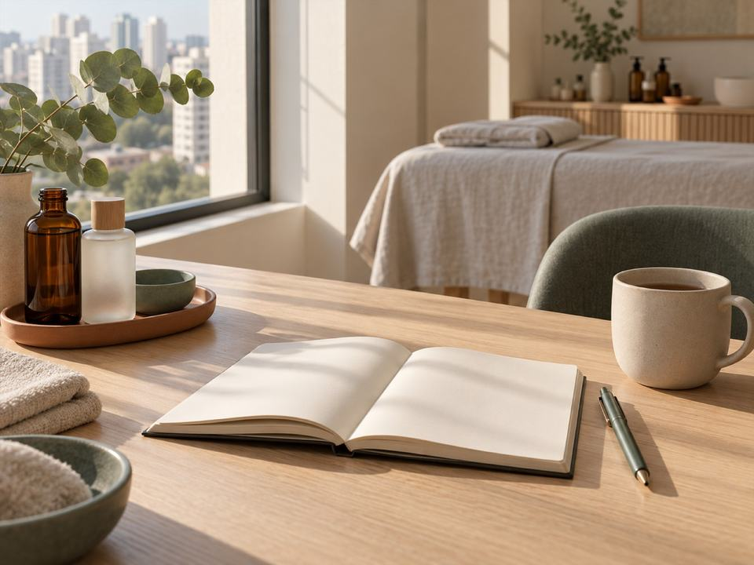
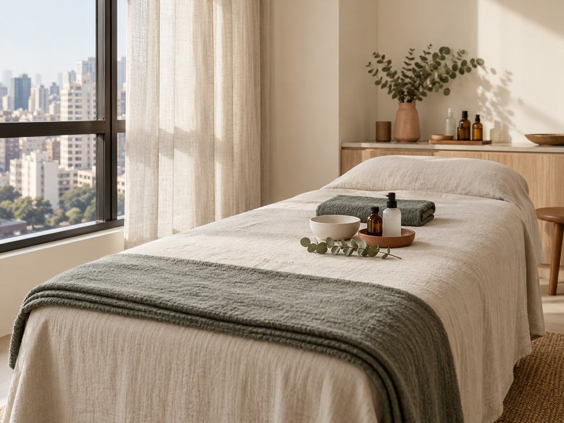
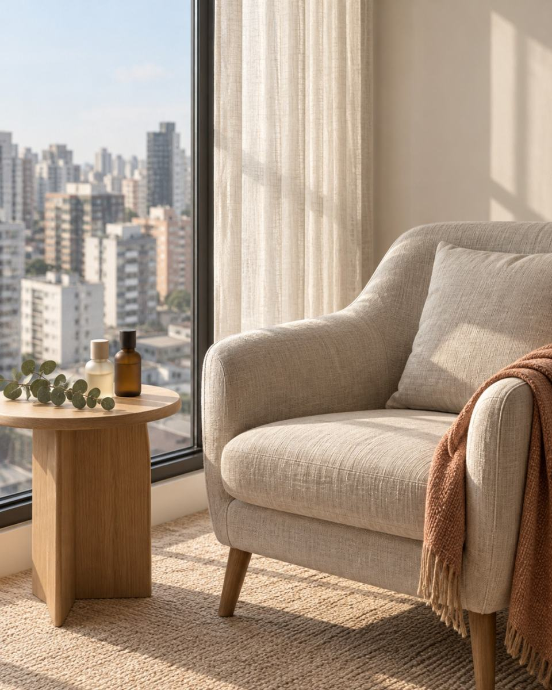

Biomédica estetaPinheiros, São Paulo
Seus limites são prioridade.
Procedimentos para a pele do rosto e para os vasinhos na perna.
Letícia Papp FernandesCRBM‑1 nº 51719
Como eu atendo
O que guia cada sessão
Cuidar de você de forma humanizada, respeitando seus limites, é algo que levo como prioridade em cada atendimento.
Se alguma etapa incomodar, ou se quiser uma pausa no meio da sessão, é só falar.

Procedimentos
O que você quer cuidar hoje?
Seis procedimentos para o rosto, os lábios e o corpo.

Microagulhamento com skinbooster
Para quem nota linhas finas e poros.

Peeling químico e enzimático
Para quem percebe manchas na pele.

Limpeza de pele profunda
Para quem convive com cravos e oleosidade.

Hidratação profunda com LED
Cuidado mensal de hidratação para o rosto.

Drenagem linfática
Massagem manual para quem sente o corpo pesado.

Hidralips
Hidratação dos lábios, feita em sessão.
- CRBM‑1 nº 51719registro ativo
- Pinheiros, São Paulo
- 5,0 no Google27 avaliaçõesout/2026

Quem vai cuidar de você
Prazer, Letícia Papp
Letícia Papp Fernandes
CRBM‑1 nº 51719
Biomédica esteta, com consultório em Pinheiros, São Paulo.
O cuidado dela é para você se sentir acolhida e segura aqui na clínica, desde a primeira mensagem.

Aplicações na pele
Feitas com registro ativo
Vasinhos, skinbooster e peeling envolvem aplicação de produto na pele. Os três são feitos por Letícia Papp Fernandes, biomédica com registro no CRBM‑1.
Como é a sua sessão
O passo a passo da sua sessão
- 01
Você chama no WhatsApp
Conte o procedimento que chamou sua atenção, ou só o que você quer cuidar.
- 02
Avaliação
Antes do primeiro procedimento, a região é observada de perto. Em geral, entram perguntas sobre a sua rotina e o que você já fez.
- 03
O protocolo explicado
Ela explica os procedimentos indicados para você: o que será feito em cada etapa e os cuidados de casa.
- 04
Sessão e cuidados depois
No dia, a sessão segue o protocolo. Durante e pós procedimento, você pode perguntar o que quiser sobre a sua pele.




A primeira conversa pode ser uma mensagem.
Agendar pelo WhatsAppEm poucas palavras
A pele não precisa de pressa. Você também não.

O que você encontra aqui
Num 8º andar da Teodoro Sampaio
A avaliação e as sessões acontecem neste endereço. A ideia é que você seja bem recebida e encontre um lugar de paz.
- Conjunto 82, no 8º andar
- Acolhe a comunidade LGBTQ+
Dúvidas
Dúvidas de quem vem pela primeira vez
Preciso de avaliação antes?
Sim. É na avaliação que se decide qual procedimento é indicado para você e se ele pode ser feito agora.
Quanto tempo dura uma sessão?
Muda de um procedimento para outro. Pergunte pelo WhatsApp quando for agendar.
Posso ir maquiada?
Para procedimentos no rosto, o ideal é chegar sem maquiagem. Quando voltar a usar, depende do procedimento feito.
Sou uma pessoa sensível. Posso fazer?
A avaliação define. Conte na primeira mensagem o que já irritou a sua pele antes, ou se você tem receio de algum procedimento.
Quantas sessões vou precisar?
Depende do procedimento e da sua pele. A avaliação define o protocolo.
Atende gestantes?
Pergunte pelo WhatsApp antes de agendar. Na gestação, a avaliação e a liberação médica definem o que pode ser feito.
Como funciona o pagamento?
Valores e formas de pagamento são conversados na avaliação.
Onde fica
Endereço e mapa
Rua Teodoro Sampaio, 2767, 8º andar, conj. 82Pinheiros, São Paulo – SP
CEP 05406-150
- Horários combinados pelo WhatsApp
- Acolhe a comunidade LGBTQ+
Agendar
Agende a sua avaliação
Escreva do seu jeito: o procedimento que viu aqui, ou o que incomoda você hoje.
- Horários combinados pelo WhatsApp
- Rua Teodoro Sampaio, 2767Pinheiros